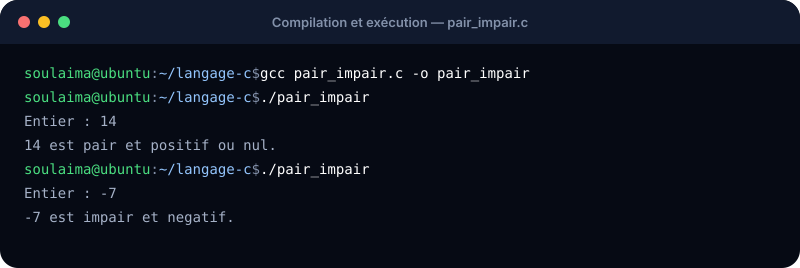
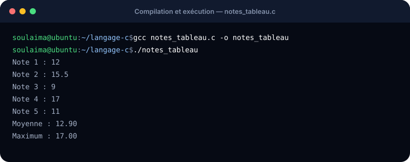
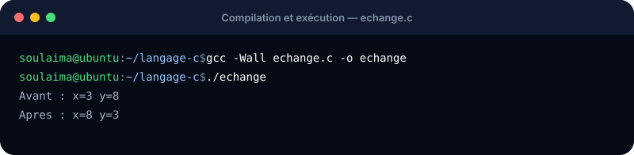

Un langage compilé, typé et proche de la machine : variables, conditions, boucles, tableaux, fonctions et pointeurs.
Compilation
Types
Tableaux
Fonctions
Pointeurs
GCC
Résumé du cours
1. Structure d'un programme
#include <stdio.h> // bibliothèque d'entrées/sorties
int main(void) { // point d'entrée du programme
printf("Bonjour !\n");
return 0; // 0 = tout s'est bien passé
}
Le code source est compilé en exécutable : gcc programme.c -o programme puis ./programme.
2. Types et variables
Chaque variable a un type déclaré : int, float, double, char. Lecture avec scanf("%d", &x), affichage avec printf("%d", x).
3. Conditions et boucles
if / else, switch, et trois boucles : for, while, do … while (exécutée au moins une fois). Les blocs sont délimités par { } et chaque instruction se termine par ;.
4. Tableaux
Un tableau a une taille fixe : int notes[5];. Les indices vont de 0 à 4 ; dépasser la taille provoque un comportement indéfini.
5. Fonctions
On déclare le type de retour et des paramètres : int carre(int x) { return x * x; }. Les paramètres sont passés par valeur (copie).
6. Pointeurs
Un pointeur contient l'adresse mémoire d'une variable. &x donne l'adresse de x, *p accède à la valeur pointée. Ils permettent à une fonction de modifier une variable de l'appelant.
Carte mentale
Survolez (ou sélectionnez au clavier) une branche pour la mettre en évidence. Sur téléphone, faites défiler horizontalement.
3 programmes et comparatif Python / C
1. Pair ou impair (conditions)
Problème : Lire un entier et dire s'il est pair ou impair, positif ou négatif.
#include <stdio.h>
int main(void) {
int n;
printf("Entier : ");
scanf("%d", &n);
if (n % 2 == 0)
printf("%d est pair", n);
else
printf("%d est impair", n);
if (n < 0) printf(" et negatif.\n");
else printf(" et positif ou nul.\n");
return 0;
}
Fonctionnement : L'opérateur % donne le reste de la division : si le reste par 2 vaut 0, le nombre est pair.
Capture de l'exécution :

Difficultés et solutions : J'avais écrit scanf("%d", n) sans & : le programme plantait. scanf a besoin de l'adresse de la variable.
2. Statistiques d'un tableau (boucles, tableaux, fonctions)
Problème : Saisir 5 notes, puis calculer la moyenne et la note maximale avec des fonctions.
#include <stdio.h>
#define N 5
float moyenne(float t[], int n) {
float s = 0;
for (int i = 0; i < n; i++) s += t[i];
return s / n;
}
float maximum(float t[], int n) {
float m = t[0];
for (int i = 1; i < n; i++)
if (t[i] > m) m = t[i];
return m;
}
int main(void) {
float notes[N];
for (int i = 0; i < N; i++) {
printf("Note %d : ", i + 1);
scanf("%f", ¬es[i]);
}
printf("Moyenne : %.2f\n", moyenne(notes, N));
printf("Maximum : %.2f\n", maximum(notes, N));
return 0;
}
Fonctionnement : Le tableau est rempli par une boucle for, puis passé à deux fonctions. En C, on doit transmettre la taille du tableau en paramètre.
Capture de l'exécution :

Difficultés et solutions : Ma boucle allait jusqu'à i <= N : lecture hors du tableau. Correction : i < N.
3. Échanger deux variables (pointeurs)
Problème : Écrire une fonction qui échange réellement les valeurs de deux variables du programme principal.
#include <stdio.h>
void echanger(int *a, int *b) {
int tmp = *a; // valeur pointée par a
*a = *b;
*b = tmp;
}
int main(void) {
int x = 3, y = 8;
printf("Avant : x=%d y=%d\n", x, y);
echanger(&x, &y); // on passe les adresses
printf("Apres : x=%d y=%d\n", x, y);
return 0;
}
Fonctionnement : Sans pointeurs, la fonction travaillerait sur des copies. En passant les adresses &x et &y, la fonction modifie les variables d'origine via *a et *b.
Capture de l'exécution :

Difficultés et solutions : Ma première version sans * n'échangeait rien. Dessiner la mémoire (cases + adresses) m'a aidée à comprendre.
Comparatif Python / C
Critère
Python
C
Syntaxe
Indentation, pas de ;, très lisible
Accolades { } et ; obligatoires
Typage
Dynamique : le type est deviné
Statique : on déclare chaque type
Exécution
Interprété
Compilé (GCC) en exécutable
Mémoire
Gérée automatiquement
Gérée par le programmeur (pointeurs, malloc/free)
Rapidité
Plus lent
Très rapide
Usages
Scripts, data, IA, web
Systèmes, embarqué, pilotes
Vidéo, podcast et vocal
Chargement de la vidéo…
Mon script vidéo5 plans · 134 mots · environ 1 minute
Le texte de ma propre vidéo explicative, écrit et relu par moi, découpé plan par plan. Il sert de narration pour l'enregistrement et de script pour l'avatar HeyGen.
Accroche
Le langage C, c'est parler presque directement à la machine. Plus exigeant que Python, mais tellement formateur ! Voici ce que j'ai appris.
Idée 1
En C, on compile avant d'exécuter, avec GCC. Chaque variable a un type déclaré : int, float, char. Et chaque instruction se termine par un point-virgule.
Idée 2
Les tableaux ont une taille fixe et leurs indices vont de zéro à n moins un. J'ai écrit des fonctions qui calculent la moyenne et le maximum de cinq notes.
Idée 3
Et la grande notion : les pointeurs. Un pointeur contient l'adresse d'une variable. Grâce à lui, ma fonction « échanger » modifie vraiment les deux variables du programme principal.
Conclusion
Python est plus simple, le C est plus rapide et plus proche du matériel. Les deux se complètent, et le tableau comparatif est sur ma page.
Podcast
Le podcast n'a pas pu être chargé.
Épisode à deux voix : Denise présente chaque partie, Henri explique le contenu du résumé.
Vocal du résumé
Lecture complète du résumé du cours, idéale pour réviser en écoutant.
Le vocal n'a pas pu être chargé. Vous pouvez écouter la voix du navigateur :